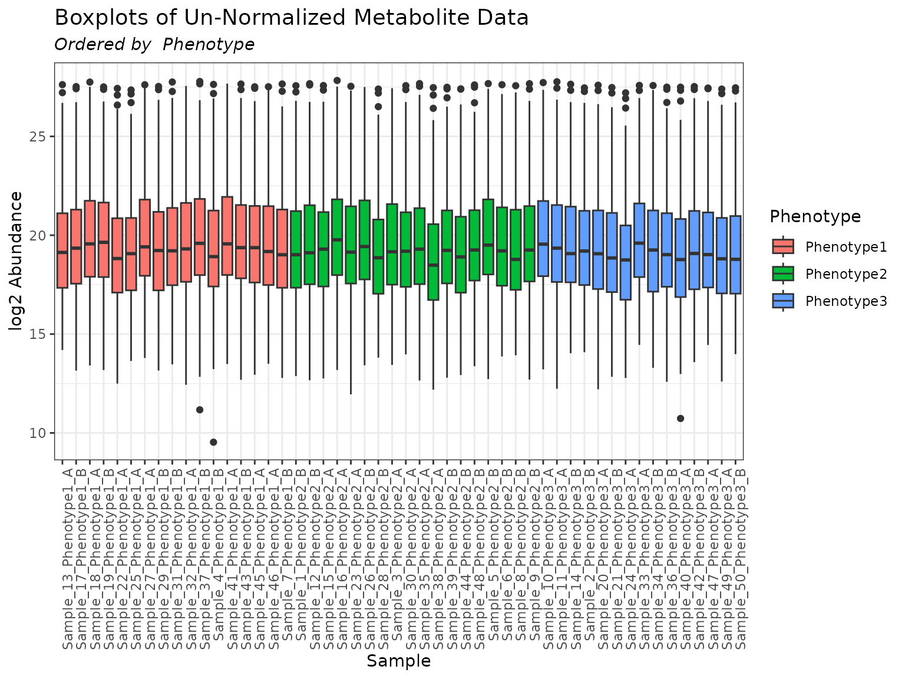
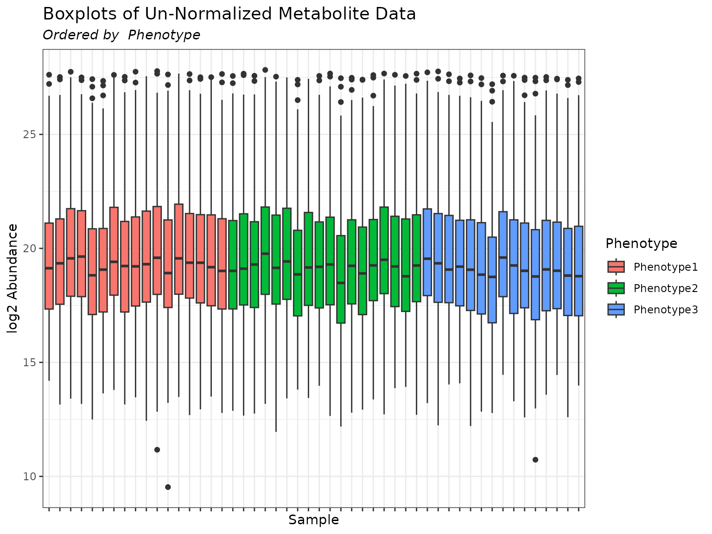
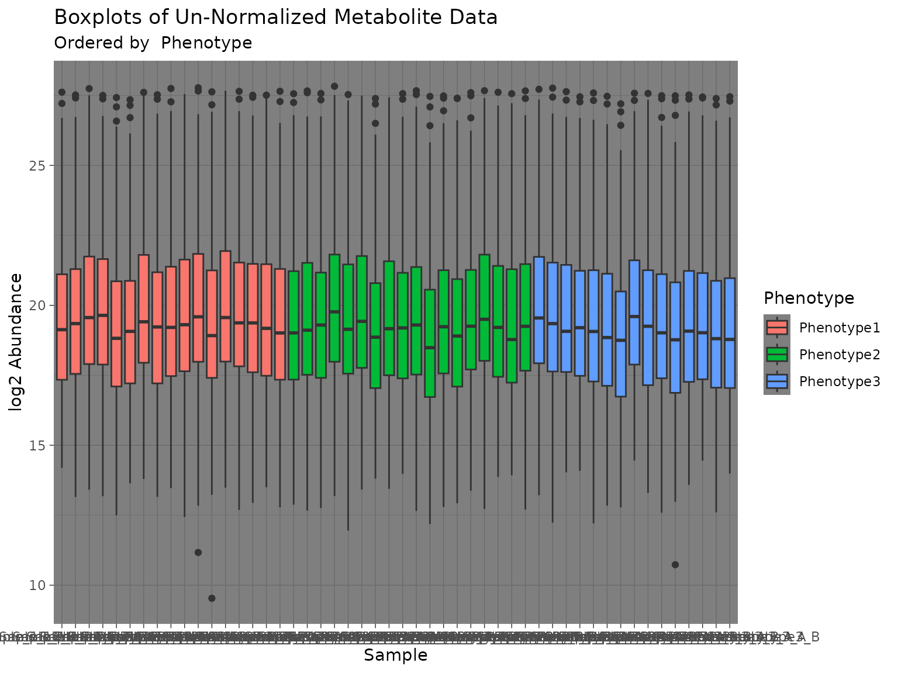

Graphing with pmartR
Kelly Stratton, Lisa Bramer
2024-02-19
Source:vignettes/Graphing_with_pmartR.Rmd
Graphing_with_pmartR.Rmd
Overview
Graphs in pmartR are made with ggplot2 (Wickham 2016), unless the
interactive = TRUE argument in specified, in which case
plots are generated using plotly (Sievert
2020).
This vignette provides an overview of plot capabilities included in
pmartR, describes the various arguments available in the
plot functions, and the use of “custom sample names” for less cluttered
graphs.
Plot functions are included for
omicsData objects
Filter objects
Correlation heatmap
Dimension reduction
Missing data
Statistical results
Custom Sample Names
Sometimes the sample names in an experiment are sufficiently long
that they make a plot unreadable. To assist the user in this situation,
pmartR includes the ability to specify shorter sample names
for use in plots only (e.g. the column names for each sample in e_data
and the corresponding column in f_data remain unchanged).
Here we plot the metabData object from pmartRdata using
the default sample names:
mymetab <- edata_transform(omicsData = metab_object, data_scale = "log2")
plot(mymetab, color_by = "Phenotype", order_by = "Phenotype")
If we would like shorter samples names so they don’t take so much
space on the graph, we can utilize the custom_sampnames
function to shorten the existing sample names based on one of the
following:
the first \(n\) characters in the sample name
a substring of the sample name from a specific location in the overall character string to another (e.g. from character 1 to character 12, or from character 7 to character 20)
based on a delimeter
using pattern matching (regex)
Examples of using each of these approaches can be found in the
documentation ?custom_sampnames. Here we will use the
delimeter approach. Note that there must be a unique custom sample name
for each sample.
head(mymetab$f_data$SampleID)## [1] "Sample_1_Phenotype2_B" "Sample_2_Phenotype3_B" "Sample_3_Phenotype2_A"
## [4] "Sample_4_Phenotype1_B" "Sample_5_Phenotype2_B" "Sample_6_Phenotype2_B"
# specify new names using delim and components arguments
mymetab_shorter_names <- custom_sampnames(omicsData = mymetab, delim = "_", components = c(1, 2))
plot(mymetab, use_VizSampNames = TRUE, color_by = "Phenotype", order_by = "Phenotype")
If we wish to obtain the plot using the original sample names, simply
omit the use_VizSampNames argument to the plot function or
set it to FALSE.
plot(mymetab, color_by = "Phenotype", order_by = "Phenotype")
plot(mymetab, use_VizSampNames = FALSE, color_by = "Phenotype", order_by = "Phenotype")Common Arguments to pmartR Plot Functions
When appropriate for a given plot type, the following options are available to the user to further customize their visualizations:
order_by - A character string specifying a main effect by which to order the boxplots. This main effect must be found in the column names of f_data in the omicsData object. If is “Group”, the boxplots will be ordered by the group variable from the group_designation function. If NULL (default), the boxplots will be displayed in the order they appear in the data.
color_by - A character string specifying a main effect by which to color the boxplots. This main effect must be found in the column names of f_data in the omicsData object. If is “Group”, the boxplots will be colored by the group variable from the group_designation function. If NULL (default), the boxplots will have one default color.
facet_by - A character string specifying a main effect with which to create a facet plot. This main effect must be found in the column names of f_data in the omicsData object. Default value is NULL.
facet_cols - An optional integer specifying the number of columns to show in the facet plot.
interactive - Logical. If TRUE produces an interactive plot.
x_lab - A character string specifying the x-axis label.
y_lab - A character string specifying the y-axis label. The default is NULL in which case the y-axis label will be the metric selected for the argument.
x_lab_size - An integer value indicating the font size for the x-axis. The default is 11.
y_lab_size - An integer value indicating the font size for the y-axis. The default is 11.
x_lab_angle - An integer value indicating the angle of x-axis labels. The default is 0.
title_lab - A character string specifying the plot title.
title_lab_size - An integer value indicating the font size of the plot title. The default is 14.
legend_lab - A character string specifying the legend title.
legend_position - A character string specifying the position of the legend. Can be one of “right”, “left”, “top”, “bottom”, or “none”. The default is “none”.
ylimit - A numeric vector of length 2 specifying y-axis lower and upper limits.
bw_theme - Logical. If TRUE uses the ggplot2 black and white theme.
palette - A character string indicating the name of the RColorBrewer palette to use. For a list of available options see the details section in .
use_VizSampNames - Logical. Indicates whether to use custom sample names. The default is FALSE.
Additional Plot Layers
Since pmartR utilizes ggplot2 for
(non-interactive) graphs, additional plot layers can be added to pmartR
plots. Note that adding plot layers may override some of the built-in
pmartR plot functionality. In the example below, we see
that adding theme_dark() changes the background color but
also changes the orientation of the x-axis labels.
plot(mymetab, order_by = "Phenotype", color_by = "Phenotype") +
theme_dark()
Plot Methods - Alphabetical
A number of S3 object classes are defined specifically for use in the
pmartR package, and many of these have accompanying plot
methods. The following list shows which objects have associated plot
methods. For details, see the help pages using
e.g. ?plot.corRes.
- plot.corRes
- plot.customFilt
- plot.cvFilt
- plot.dataRes
- plot.dimRes
- plot.imdanovaFilt
- plot.isobaricnormRes
- plot.isobaricpepData
- plot.lipidData
- plot.metabData
- plot.moleculeFilt
- plot.naRes
- plot.nmrData
- plot.nmrnormRes
- plot.normRes
- plot.pepData
- plot.proData
- plot.proteomicsFilt
- plot.rmdFilt
- plot.SPANSRes
- plot.statRes
Plot Methods - Grouped by Type of S3 Data Object
Data Objects
- plot.isobaricpepData
- plot.lipidData
- plot.metabData
- plot.nmrData
- plot.pepData
- plot.proData
Filters
- plot.customFilt
- plot.cvFilt
- plot.imdanovaFilt
- plot.moleculeFilt
- plot.proteomicsFilt
- plot.rmdFilt
EDA
- plot.corRes
- plot.dataRes
- plot.dimRes
- plot.naRes
Normalization
- plot.SPANSRes
- plot.isobaricnormRes
- plot.nmrnormRes
- plot.normRes
Statistics
- plot.statRes